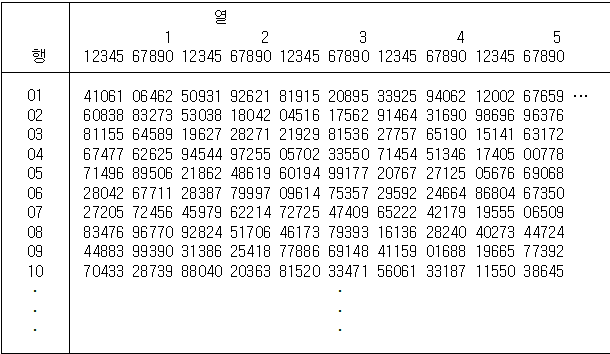
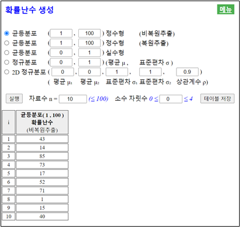

자료의 전체 집단이 매우 크게 되면 이 집단의 평균이나 분산같은 특성값을 구하기가 쉽지 않다.
이러한 경우 전체집단을 모집단이라고 하는데 이 중에서 적당한 수의 표본을 뽑아 모집단의
특성을 추정하는 것을 통계적 추정이라 한다.
이러한 추정을 이용해 불확실한 상황에서 합리적인 의사결정을 하는 것이 현대 통계학의
중요한 기능이다.
4.1 모집단과 표본
⭐ 생각열기
어느 공장에서 스마트폰을 하루에 수 만대씩 생산한다. 스마트폰 화면의 강화유리는
강도가 일정한 높이에서 떨어뜨렸을 때 그 충격을 견뎌고 깨지지 않아아 충격 품질검사에서
합격한다.
💎 탐구
1) 이 공장에서 어느 날 생산한 모든 스마트폰에 대한 충격검사를 실시할까?
2) 만일 생산한 모든 스마트폰을 조사하기 어렵다면 어떠한 방법으로 충격 품질검사를 실시할까?
스마트폰의 충격 품질검사와 같이 제품이 흠이 나거나 부서질 수 있는 검사는
모든 제품에 대해 실시할 수는 없다. 그래서 대개 생산된 제품중 일부를 추출하여 조사하는 방법을 택한다.
통계 조사에서 대상이 되는 전체 집단을 모집단이라고 하고 모집단에서 조사를 위해
뽑은 일부를 표본이라고 한다. 일반적으로 모집단은 아주 크다.
모집단의 평균과 같은 특성을 알아보기 위하여 모집단 전체를 조사하는 것을 전수조사라고 한다.
그러나 전체 모집단을 모두 조사하는 전수조사는 엄청난 비용과 시간을 필요로 한다.
또 조사 과정에서 충격 품질검사와 같이 제품이 파괴되는 경우는 전수조사가 적합지 않다.
이와 같이 전수조사가 어려운 경우에 모집단에서 일부 표본을 뽑은 후 이 표본들에 대하여
조사하는 표본조사를 이용한다. 모집단에서 일부를 추출한 표본을 이용하여 전체 모집단의 특성을 예측하는 것을 추측통계라 한다.
🎲 예제 4.1
다음과 같은 내용을 조사하기 위하여 전수조사와 표본조사 중 어떤 방법이 더 적절한가?
1) 2020년도 우리나라 출생 인구
2) 한 국회의원 선거에서 특정 후보의 지지율
풀이
1) 2020년도 우리나라 출생 인구수 조사를 위해서는 모집단 전체를 조사해야 정확한 값을 알 수 있다. 따라서 전수조사가 적절하다.
2) 한 국회의원 선거에서 특정 후보의 지지율을 모집단 전체를 조사하기 위해서는 많은 시간과 노력이 소요된다. 하지만 특정 후보의 지지율은 빠른 시간 내에 알아야 이 결과에 따라 선거 전략의 수립 등을 할 수 있다. 따라서 표본조사가 더 적절하다.
⏱ 문제 4.1
다음과 같은 내용을 조사하기 위하여 전수조사와 표본조사 중 어떤 방법이 더 적절한가?
1) 2020년도 우리나라 산업재해 현황
2) 한 TV 프로그램의 시청률
가. 표본의 추출
⭐ 생각열기
스마트폰의 충격 품질검사를 표본조사로 하기로 결정하였다.
💎 탐구
하루에 생산된 전체 스마트폰에서 어떻게 표본을 추출하는 것이 좋을까?
모집단의 특성을 표본을 이용하여 조사하고자 할 때 표본을 어떻게 뽑느냐에 따라
결과가 서로 달라질 수 있어 표본추출 방법에 대한 많은 연구가 되었다. 일반적으로 표본을
추출할 때 많이 사용되는 방법은 모집단의 각 대상이 표본으로 뽑힐 확률이 같도록 하는
임의추출 방법을 이용한다. 친구들 사이에서 한 사람을 뽑을 때 많이 이용하는
제비뽑기는 임의추출 방법의 예이다.
✨ 임의추출
모집단의 각 대상이 표본으로 뽑힐 확률이 같도록 뽑는 방법
모집단에서 표본을 임의추출할 경우 한번 뽑은 대상을 다시 모집단에 포함시키는 복원추출과
뽑은 대상을 다시 모집단에 넣지 않는 비복원추출이 있다.
일반적으로 표본을 추출할 경우 모집단의 각 대상이 표본으로 뽑힐 확률이 같도록 하기 위해서는
난수를 많이 사용한다. 난수란 0에서 9까지의 숫자를 특별한 규칙성이나 편중성이 없이
흩어 놓은 것으로 [표 4.1]은 이와 같은 난수를 행과 열로 모아 놓은 난수표의 일부이다.
[표 4.1] 난수를 행과 열로 모아 놓은 난수표

예를 들어 한 학급에 50명의 학생이 있고 이들의 출석부 번호가 1, 2, ... , 50이라고 하자.
이들 중 3명을 임의추출하려면 먼저 임의의 행과 열을 선택한다. 만일 3행과 11열을 선택하였다면
이곳서부터 시작되는 두 자리 숫자 19, 94, 21, 28 등을 밑으로 읽어 내려간다. 이 중에서
1에서 50사이를 벗어나는 숫자는 버리고 세 숫자 19, 21, 28에 해당되는 번호가 추출된 학생이다.
⏱ 문제 4.2
우리 학교 학생 7명이 한 취미 동아리를 만들었다. 이 중에서 대표 1명을 [표 4.1]의
난수표를 이용하여 추출하라. 각 학생은 1에서 7까지 번호가 부여되어 있다고 가정하자.
위와 같이 난수표를 이용하는 임의추출은 표본의 크기가 클 경우에는 쉽지 않아 최근에는
컴퓨터로 균등분포를 이용하여 난수 생성을 하는데 <그림 4.1>은 『eStatH』를 이용하여
1에서 100까지 숫자 중 10개의 난수를 비복원추출로 뽑은 것이다.

<그림 4.1> 『eStatH』를 이용한 균등분포(1, 100)에서 10개의 난수생성
『eStatH』를 이용하면 이밖에도 정수형 균등분포\([a,b]\) 복원추출, 실수형 균등분포\([a,b]\),
정규분포 \(N(\mu, \sigma^2 )\), 그리고 2차원 정규분포
\(N(\mu_1 , \mu_2, \sigma_1 , \sigma_2 , \rho )\)의 난수를 생성할 수 있다.
🎲 예제 4.2
어느 학급의 학생수가 50명이다. 이 중에서 3명의 학생을 비복원 임의추출하고자 한다.
『eStatH』를 이용하여 난수를 추출하여 보자.
(실제로는 50명의 작은 모집단에서 표본을 추출할 필요가 없지만 설명을 위한 예이다.)
풀이
50명 중 3명의 표본을 추출하기 위해서는 먼저 학생의 명단을 만든 후 1번에서 50번까지
일련번호를 부여하여야 한다. 만일 출석부가 있다면 이를 사용하여도 무방하다.
학생을 추출하기 위해서 『eStatH』의 ‘확률난수 생성’에서 정수형 균등분포 비복원추출을
선택하고, (1, 50) 을 입력한 후 자료수 3개를 선택한 후 [실행] 버튼을 누르면 <그림 4.2>와
같이 난수가 생성된다.
[Random Number Generation]
<그림 4.2> 『eStatH』의 균등분포(1,50) 난수생성
⏱ 문제 4.3
한 학급에 30명 학생이 있을때 『eStatH』를 이용하여 5명의 학생을 비복원 임의추출하라.
4.2 모평균과 표본평균
⭐ 생각열기
우리나라 전체 고등학교 1학년 남학생들의 신장을 조사하고자 한다.
💎 탐구
전체 고등학교 1학년 남학생 모집단의 신장에 대한 평균과 이 모집단에서 100명의 표본을
추출했을 때의 표본평균과는 어떠한 관계가 있을까?
통계적 실험이나 조사의 목적은 모집단에 대한 특성을 알아보려고 하는 것이다. 모집단의 특성을
나타내는 확률변수를 \(X\)라 할 때 \(X\)의 평균, 분산, 표준편차를 모평균, 모분산,
모표준편차라고 부르고 기호로 각각 \(\mu, \sigma^2, \sigma\)로 표시한다.
모집단에서 크기가 \(n\)인 표본을 임의추출 하였을 때 추출된 대상을 확률변수
\(X_1 , X_2 , ... , X_n \)이라고 하면 이들의 평균, 분산, 표준편차를 각각
표본평균, 표본분산, 표본표준편차라고 부르고 기호로 각각
\(\overline X , S^2 , S\)로 표시하며 다음과 같이 정의된다.
\(\overline X = \frac{1}{n}(X_1 + X_2 + \cdots + X_n)\)
\(S^2 = \frac{1}{n-1} \{ (X_1 - \overline X )^2 + (X_2 - \overline X )^2 + \cdots + (X_n - \overline X )^2 \} \)
\(S = \sqrt{S^2}\)
여기서 표본분산의 정의에 \(n-1\)로 나눈 것은 모분산의 추정을 정확히 하기 위한 것으로
대학 통계에서 그 이유를 설명한다.
표본으로 추출된 대상을 확률변수 \(X_1 , X_2 , ... , X_n \)로 표시하였을 때 실제로
이 확률변수들이 측정된 값은 \(x_1 , x_2 , ... , x_n \)으로 표시한다. 이 값들의
평균, 표본분산, 표준편차는 다음과 같다.
\(\overline x = \frac{1}{n}(x_1 + x_2 + \cdots + x_n)\)
\(s^2 = \frac{1}{n-1} \{ (x_1 - \overline x )^2 + (x_2 - \overline x )^2 + \cdots + (x_n - \overline x )^2 \} \)
\(s = \sqrt{s^2}\)
예를 들어 고등학교 1학년 남학생 모집단에서 세 명의 표본을 뽑을 때 세 명의 표본이
뽑힐 경우의 수는 무수히 많으므로 이를 확률변수 \(X_1 , X_2 , X_3 \)로 표시하고
실제 뽑힌 세 남학생의 신장이 160cm, 170cm, 180cm 일 때 이 값을
\(x_1 = 160, x_2 = 170, x_3 = 180\)으로
표시하는 것이다. 그리고 이들의 평균, 분산, 표준편차는 다음과 표시한다.
<그림 4.3>은 『eStatH』를 이용하여 대략 표준정규분포 형태를 갖는 1만개의 모집단에서
약 10%의 표본을 임의추출하였을 때 모집단의 특성값과 표본의 특성값과의 관계를 보여주는
시뮬레이션이다. 그림을 살펴보면 모집단의 특성값 중 최솟값(min), 최댓값(max) 등은
모집단과 표본의 값이 차이가 있지만 모평균과 표본평균은 큰 차이가 없음을 알 수 있다
[Population vs Sample]
<그림 4.3> 모집단과 표본의 관계를 보여주는 시뮬레이션
가. 모든 가능한 표본평균의 분포
⭐ 생각열기
한 회사의 영업사원이 5명이 있는데 이들이 회사에 근무한 기간은 다음과 같다.
6, 2, 4, 8, 10 (단위 년)
이 5명의 근무 기간을 모집단이라 가정하자.
(이렇게 작은 모집단은 실제로는 굳이 표본을 추출할 필요가 없지만, 여기서는 표본평균의 분포를 설명하기 위한 예이다.)
💎 탐구
이 모집단의 평균과, 모집단에서 표본의 크기가 2인 모든 가능한 표본들을 복원 임의추출
하였을 때 각각의 표본평균과의 관계는 어떠할까?
표본의 크기가 2인 모든 가능한 표본들을 복원 임의추출 하였을 때 각각의 표본을 \(X_1 , X_2\)로
표시하면 표본평균은 확률변수 \(\overline X = \frac{1}{2} (X_1 + X_2 )\)가 되고
표본평군 \(\overline X \)가 가질 수 있는 값은 \(\overline x \)가 된다. 표본의 크기가 2인
모든 가능한 복원추출 \(5^2 = 25\)개 표본과 각 표본의 평균값 \(\overline x \)는 다음과 같다.
[표 4.2] 모집단에서 추출 가능한 \(n\)=2인 모든 표본들과 표본평균
이 25개 표본평균들의 도수분포표와 그 그래프를 그리면 다음과 같다.
[표 4.3] 모든 가능한 표본평균의 도수분포
<그림 4.5> 모든 가능한 표본평균들의 분포
[표 4.3]의 모든 가능한 표본평균의 도수분포를 보면 표본평균들 중에는 모평균 6과 정확하게
일치하는 값도 있고 2나 10과 같이 차이가 많이 나는 표본평균도 있다. 하지만 <그림 4.5>를 보면
이 표본평균들은 모평균 6 주위에 많이 몰려 있음을 알 수 있다.
[표 4.2]의 25개 표본평균들의 평균 \(E(\overline X)\)와 분산 \(V(\overline X)\)은 다음과 같다.
만일 모집단이 정규분포 \(N(\mu , \sigma^2 )\)를 따른다면 크기가 \(n\)인 표본을
임의추출하면 표본평균 \(\overline X\)의 분포는 정규분포
\(N(\mu , \frac{\sigma^2}{n} )\)을 따른다는 것이 알려져 있다. 또 모집단의 분포가
정규분포가 아닌 경우에도 \(n\)이 충분히 크면 표본평균 \(\overline X\)는 근사적으로
정규분포 \(N(\mu , \frac{\sigma^2}{n} )\)을 따른다고 알려져 있다.
✨ 표본평균의 분포
모평균 \(\mu\)이고 모분산이 \(\sigma^2\)인 모집단에서 크기가 \(n\)인 표본을 임의추출할 때
표본평균 \(\overline X\)의 분포는 다음과 같다.
1) 모집단이 정규분포 \(N(\mu , \sigma^2 )\)를 따를 경우 표본평균 \(\overline X\)의
분포는 \(N(\mu , \frac{\sigma^2}{n} )\)를 따른다.
2) 모집단이 정규분포를 따르지 않을 경우에도 \(n\)이 충분히 크면
표본평균 \(\overline X\)의 분포는 근사적으로 \(N(\mu , \frac{\sigma^2}{n} )\)를 따른다.
이를 중심극한정리라 부른다.
위의 표본평균의 분포는 추측 통계학의 기본이 되는 이론으로 매우 중요하다. <그림 4.6>은
모집단이 정규분포 형태를 따를 때 표본의 크기에 따라 표본평균의 분포가 어떻게 달라지는지를
보여주는 『eStatH』의 시뮬레이션이다. 그림을 살펴보면 표본의 크기가 증가하면 표본평균의
분포는 평균이 모평균과 같은 정규분포이며 분산이 점차로 작은 형태가 되어 뾰족해 진다.
이는 표본의 크기가 매우 크면 모든 가능한 표본평균들의 분포가 모평균 주위에 밀집하게
된다는 것을 의미한다. 즉 우리가 얻는 표본평균은 모든 가능한 표본평균 중에 하나지만
모평균에 근접한 값이어서 어느 표본평균이라도 모평균을 잘 추정할 수 있는 근거가 된다.
[Sampling Distribution of Sample Means]
<그림 4.6> 『eStatH』의 표본평균의 분포 시뮬레이션
🎲 예제 4.3
고등학교 1학년 전체 모집단의 신장이 모평균 170cm, 모표준편차 10com인 정규분포를 따른다고
한다. 100명의 표본을 임의추출할 때, 다음 확률을 구하라.
우리나라 전체 고등학교 1학년 남학생들의 평균 신장을 추정하고자 한다.
10명의 고1 남학생을 임의 추출하여 신장을 조사하니 표본평균이 170cm 이었다.
💎 탐구
전체 고등학교 1학년 남학생 모집단의 신장에 대한 평균의 추정값으로 표본평균을
이용해도 될까?
표본조사를 실시하면 모집단에서 단지 한 세트의 표본만을 추출하여 모평균을 추정한다.
일반적으로 추출된 표본의 표본평균을 모평균의 대한 추정값으로 생각하게 되는데
과연 수없이 가능한 표본들 중 한 세트의 표본에서 얻은 표본평균이 값이 모평균을 잘
예측할 수 있을까?
앞 절에서 연구한 표본평균의 분포가 이 질문에 대한 해답이다. 즉, 모집단이
어떠한 분포이든지 표본의 크기가 충분히 크다면 모든 가능한 표본평균들은 모평균
주위에 정규분포 모양을 하면서 밀집하게 된다. 따라서 우리가 얻은 표본 한 세트의
평균은 대개 모평균과 가깝고, 제일 나쁜 경우라도 모평균과의 차(오차라고 함)가 크지 않아
표본평균이 모평균의 좋은 추정값이라 할 수 있다. 표본의 크기가 크면 클수록 표본평균의
분포는 모평균 근처에 더욱 밀집되므로 이 오차는 줄어들게 된다.
관측된 표본평균의 하나의 값이 모평균의 추정값이라고 하는 것을 모평균의
점추정(하나의 점(수치)으로 추정한다는 뜻)이라 한다. 모평균을 점추정하는데
사용하는 표본평균은 여러 가지 좋은 특성을 가지고 있다. 앞절에서 살펴본 한 가지 특성은
모든 가능한 표본평균의 평균이 모평균과 같게 되는 것으로 이러한 성질을
비편향추정량이라 한다.
점추정과 달리 구간으로 모평균을 추정하는 것을 구간추정이라 한다. 만일 모집단이
평균이 \(\mu\), 분산이 \(\sigma^2\)인 정규분포라면, 표본평균 \(\overline X\)의 분포는
평균이 \(\mu\), 분산이 \(\frac{\sigma^2}{n}\)인 정규분포이므로, 하나의 표본평균이
구간 \(\mu ± 1.96 \frac{\sigma}{\sqrt{n}}\)에 포함될 확률은 95％ 이다. 즉,
$$
P ( \mu - 1.96 \frac{\sigma}{\sqrt{n}} \le \overline X \le \mu + 1.96 \frac{\sigma}{\sqrt{n}} ) = 0.95
$$
이 식을 다시 정리하면 다음과 같이 쓸 수 있다.
$$
P ( \overline X - 1.96 \frac{\sigma}{\sqrt{n}} \le \mu \le \overline X + 1.96 \frac{\sigma}{\sqrt{n}} ) = 0.95
$$
이 식의 의미는 모든 가능한 표본평균에 대해 다음의 구간공식(\(\sigma\)는
알려져 있다고 가정)을 적용하였을 때 얻어지는 모든 가능한 구간들 중 95％의 구간들이
모평균 \(\mu\)를 포함한다는 것이다. 다음 구간공식을 모평균의 95％ 신뢰구간이라 한다.
$$
[ \overline X - 1.96 \frac{\sigma}{\sqrt{n}} , \overline X + 1.96 \frac{\sigma}{\sqrt{n}} ]
$$
일반적으로 \( \overline X ≈ N(\mu , \frac{\sigma^2}{n} )\)이므로 \(\overline X\)를
표준화하면 \( Z = \frac{\overline X - \mu}{\frac{\sigma}{\sqrt n}} ≈ N(0,1) \)이 된다.
따라서 표준정규분포의 성질에서
$$
P ( - z_{\alpha / 2} \le \frac{ \overline X - \mu} {\frac{\sigma}{\sqrt{n}}} \le z_{\alpha /2} ) = 1- \alpha
$$
이며 위 식의 왼쪽 항을 풀어 쓰면 다음과 같다.
$$
P ( \mu - z_{\alpha /2 } \frac{\sigma}{\sqrt{n}} \le \overline X \le \mu + z_{\alpha /2 } \frac{\sigma}{\sqrt{n}} ) = 1- \alpha
$$
여기서 (1-\(\alpha\))는 신뢰도라고도 하는데, 이 구간공식에 의해 산출된 모든
구간들 중에서 모평균이 포함되어 있을 구간들의 확률을 뜻한다. 대개 \(\alpha\)는
0.01 또는 0.05를 사용한다. \(z_{\alpha}\)는 표준정규분포의 오른쪽 끝 확률이 \(\alpha\)인
점을 의미한다. 즉 \(Z\)가 표준정규분포를 따르는 확률변량이면 \(Z\)가 \(z_{\alpha}\)보다
클 확률이 \(\alpha\)인 점이며 수식으로 표현하면 \(P(Z \ge z_{\alpha} ) = \alpha \)가
성립된다. 예를 들면, \(z_{0.025}\) = 1.96, \(z_{0.005}\) = 2.575 등이다.
즉 모평균 의 99% 신뢰구간은 다음과 같다.
$$
[ \overline X - 2.575 \frac{\sigma}{\sqrt{n}} , \overline X + 2.575 \frac{\sigma}{\sqrt{n}} ]
$$
<그림 4.7>은 표준정규분포를 따르는 1만개의 모집단 자료에서 표본의 크기가 \(n = 20\)인
100 세트의 표본을 임의추출하여 모평균에 대한 95％ 신뢰구간을 구한 것이다. 이 경우에는
100개의 신뢰구간 중 94개만 모평균 0을 포함하고 있다. 이러한 실험을 반복할 때마다.
결과는 약간씩 달라질 수 있다. 이 시뮬레이션은 위의 공식으로 모평균의 구간추정을
여러 번 하였을 때 대략 신뢰도만큼의 구간만 모평균을 포함함을 보여 준다.
[Confidence Interval Experiment]
<그림 4.7> 『eStatH』 모평균의 95% 구간추정 의미 실험
일반적으로 모집단이 평균이 \(\mu\)인 정규분포이고 모분산 \(\sigma^2\)을 알고 있다면
모평균 \(\mu\)의 신뢰구간은 신뢰도를 \(1-\alpha\)로 하였을 때 다음과 같다.
✨ 모평균 \(\mu\)의 신뢰도 \(1-\alpha\) 구간추정
--- 모집단의 평균이 \(\mu\)인 정규분포이고 모분산 \(\sigma^2 \)을 알고 있는 경우
$$
[ \overline X - z_{\alpha/2} \frac{\sigma}{\sqrt{n}} , \overline X + z_{\alpha/2} \frac{\sigma}{\sqrt{n}} ]
$$
신뢰도 95%인 모평균의 신뢰구간 \([ \overline X - 1.96 \frac{\sigma}{\sqrt{n}} , \overline X + 1.96 \frac{\sigma}{\sqrt{n}} ] \)
신뢰도 99%인 모평균의 신뢰구간 \([ \overline X - 2.575 \frac{\sigma}{\sqrt{n}} , \overline X + 2.575 \frac{\sigma}{\sqrt{n}} ] \)
🎲 예제 4.4
우리나라 전체 고등학교 1학년 남학생들의 신장은 정규분포를 따르고 모표준편차가 10cm로 알려져 있다. 추정하고자 한다. 100명의 고1 남학생을 임의 추출하여 신장을 조사하니 표본평균이 170cm 이었다. 고등학교 1학년 남학생 신장 모평균에 대하여
1) 신뢰도 95%의 신뢰구간을 구하라.
2) 신뢰도 99%의 신뢰구간을 구하라.
3) 표본의 크기를 400명으로 하였을 때 표본평균이 170(cm일 경우 신뢰도 95%의 신뢰구간을 구하라. 이 신뢰구간을 1)의 신뢰구간과 비교하라.
풀이
1) 신뢰도 95％는 \(\alpha\) = 0.05를 의미하므로
\(z_{\alpha/2} = z_{0.05/2} = z_{0.025} = 1.96\)
이다. 따라서 95％ 신뢰구간은 다음과 같다
\([ \overline X - 1.96 \frac{\sigma}{\sqrt{n}} , \overline X + 1.96 \frac{\sigma}{\sqrt{n}} ] \)
그러므로, 표본의 크기가 증가하면 구간의 너비가 좁아진다. 즉, 보다 정확한 추정이 된다.
『eStatH』를 이용하면 쉽게 모평균을 추정할 수 있다. 주메뉴에서 ‘추정: 모평균 ’를
선택하고 <그림 4.8>에서 표본크기, 표본평균, 모표준편차를 입력한 후 [실행] 버튼을
클릭하면 신뢰구간이 계산된다. 그 아래에 있는 표본의 크기와 신뢰도를 조정하며
신뢰구간의 너비를 조절하는 시뮬레이션 창이다.
⏱ 문제 4.7
한 공장에서 생산되는 볼트의 길이는 모표준편차 2mm인 정규분포를 따른다고 한다. 25개의 표본을 임의추출할 때 표본평균이 101mm라면,
1) 모집단 볼트 길이의 평균을 95% 신뢰구간으로 추정하라.
2) 모집단 볼트 길이의 평균을 99% 신뢰구간으로 추정하라.
3) 두 신뢰구간의 너비를 비교하라.
🎲 예제 4.5
우리나라 전체 고등학교 1학년 남학생들의 신장은 정규분포를 따르고 모표준편차가 10cm로 알려져 있다. 추정하고자 한다. 10명의 고1 남학생을 임의 추출하여 신장을 조사하니 다음과 같다.
171, 172, 185, 169, 175, 177, 174, 179, 168, 173
『eStatH』를 이용하여 고등학교 1학년 남학생 신장 모평균에 대하여
1) 신뢰도 95%의 신뢰구간을 구하라.
2) 신뢰도 99%의 신뢰구간을 구하라.
3) 위의 두 신뢰구간을 비교하라.
풀이
자료가 있을 경우 『eStatH』를 이용하면 쉽게 모평균을 추정할 수 있다. 주메뉴에서
‘추정: 모평균 \(\mu\)’를 선택하고 데이터를 <그림 4.8>과 같이 입력한 후 [실행]
버튼을 클릭하면 신뢰도 95%의 신뢰구간이 계산된다.
신뢰도를 99%을 선택하고 [실행] 버튼을 누르면 99% 신뢰구간이 계산된다.
그 아래에 있는 표본의 크기와 신뢰도를 조정하며 신뢰구간의 너비를 조절하는 시뮬레이션 창이다.
[ ]
<그림 4.8> 자료를 이용항 『eStatH』 모평균의 추정
⏱ 문제 4.8
한 공장에서 생산되는 볼트의 길이는 모표준편차 2mm인 정규분포를 따른다고 한다.
10개의 표본을 임의추출한 자료가 다음과 같다.
99 101 102 99 102 101 100 97 99 98
103 97 106 100 99 106 101 98 101 97
1) 모집단 볼트 길이의 평균을 95% 신뢰구간으로 추정하라.
2) 모집단 볼트 길이의 평균을 99% 신뢰구간으로 추정하라.
3) 두 신뢰구간의 너비를 비교하라.